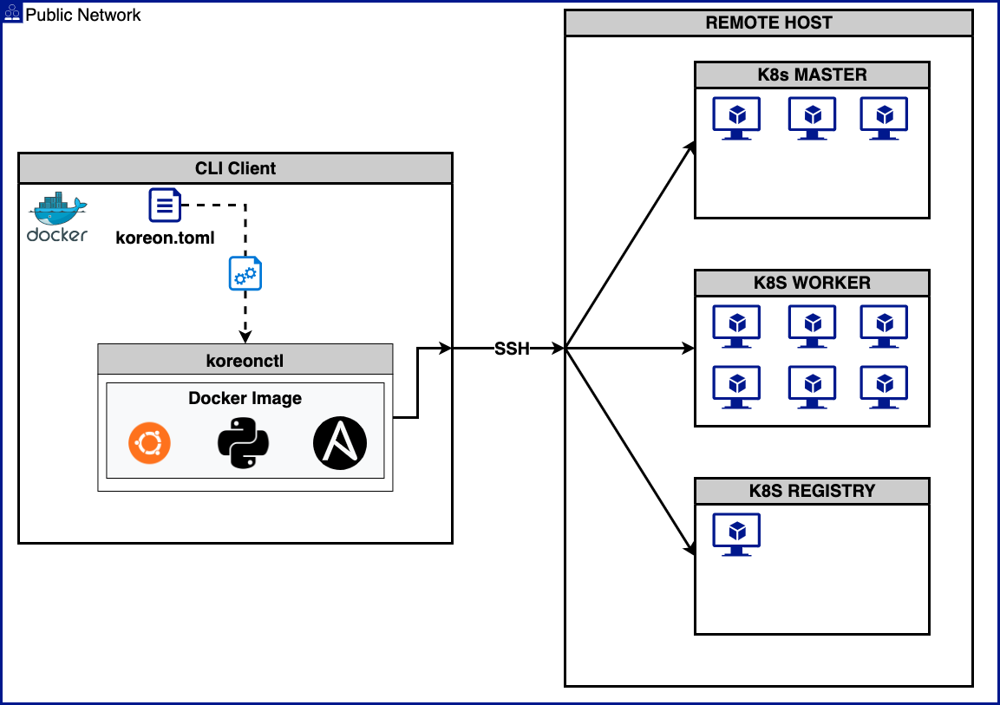

Kore-On
구성도

요구사항
- docker v19.03.15 이상
- Ubuntu 18.04, 20.04
- CentOS/RHEL 7, 8
- SSH KEY
CLI client
- CLI client에는 Docker가 설치되어있어야 합니다.
- CLI client에서 target node에 ssh 접근이 가능해야 합니다.
- CLI client의 root 계정에서 koreonctl 실행을 권장합니다.
target node
- controlplane node의 제한은 1 ~ 7대이며 홀수로 구성해야 합니다.
온라인 설치
Tip
koreonctl을 통해 클러스터 구성을 진행합니다.
아래 샘플에서는 설치 될 타켓 노드를 master 노드 1대 와 worker 노드 2대의 설정으로 진행합니다.
- [SSH KEY PATH]
- 설치 될 클러스터의 SSH 접근 key값을 설정합니다
- 이 때 PATH 값은 절대 경로여야합니다.
- [USERNAME]
- 설치 될 클러스터 노드의 SSH 노드의 접속 user를 설정합니다
- 모든 노드의 user명이 같아야합니다.
docker install
koreonctl의 실행을 위해 실행 할 Client에 Docker 설치가 필요합니다.
다음 링크를 참조하여 Client OS에 맞는 도커를 설치합니다.
https://docs.docker.com/engine/install/
이미 설치 되었다면 다음 단계로 진행합니다.
-
설치 CLI Tool 인 koreonctl 을 다운로드 합니다.
-
다운로드 한 설치파일에 실행 권한을 부여 합니다.
-
실행 파일명 변경 및 위치 이동
-
설치 설정파일 koreon.toml 을 기본값으로 생성 합니다.
-
koreon.toml 파일을 클러스터 구성에 맞게 수정 합니다.
koreon.toml
[koreon] ## Required ## - local-repository-install: local repository installation activate. (Required when selecting the closed network.) ## It is installed on the registry host. ## - local-repository-port: Port number used as local repository. (Required when selecting the closed network.) ## If you use the default value, you can skip it. (default: 8080) ## - local-repository-archive-file: local repository packages archive file path (Required when selecting the closed network.) ## - local-repository-url: local repository service url (Required when selecting the closed network.) ## If you are installing a private repository, you can skip it. (default: registry-ip) ## Optional ## - cluster-name: use cluster name in config context (default: "kubernetes") ## - install-dir: installation scripts(harbor, shell scripts) save directory (default: "/var/lib/kore-on") ## - cert-validity-days: SSL validity days(default: 36500) ## - debug-mode: Check mode is just a simulation, and if you have steps that use conditionals that depend on the results of prior commands, ## it may be less useful for you. (default: false) ## - closed-network: Enable Air Gap (default: false) #cluster-name = "testing-cluster" #install-dir = "/var/lib/kore-on" #cert-validity-days = 36500 #debug-mode = true #closed-network = true #local-repository-install = true #local-repository-port = 8080 #local-repository-archive-file = "" #local-repository-url = "http://x.x.x.x" [kubernetes] ## Required ## - ## Optional ## - version: Kubernetes version (default: "latest") ## If you input only the major version, the minor version automatically selects the last version. ## - container-runtime: use k8s cri (only containerd) ## - kube-proxy-mode: use k8s proxy mode [iptables | ipvs] (default: "ipvs") ## - service-cidr: k8s service network cidr (default: "10.96.0.0/20") ## - pod-cidr: k8s pod network cidr (default: "10.4.0.0/24") ## - node-port-range: k8s node port network range (default: "30000-32767") ## - audit-log-enable: k8s audit log enabled (default: true) ## - api-sans: Add k8s apiserver SAN [--apiserver-cert-extra-sans same as setting] (default: master[0] ip address) #version = "v1.23.12" #container-runtime = "containerd" #kube-proxy-mode = "ipvs" #service-cidr = "172.20.0.0/24" #pod-cidr = "10.10.0.0/24" #node-port-range = "30000-32767" #audit-log-enable = true #api-sans = ["x.x.x.x"] [kubernetes.etcd] ## Required ## - ip: k8s control plane nodes ip address. (Required when selecting the external-etcd="true") ## - private-ip: K8s control plane nodes private ip address. (Required when selecting the external-etcd="true") ## If you use the same IP address, you can skip it. ## Optional ## - external-etcd: used external etcd than input the ip and private-ip address (default: false) ## not used than skip ip address. it is used control plane nodes as automatic. #external-etcd = true #ip = ["x.x.x.x"] #private-ip = ["x.x.x.x"] [kubernetes.calico] ## Required ## - ## Optional ## - vxlan-mode: calico VXLAN mode activate (default: false) #vxlan-mode = true [node-pool] ## Required ## - ## Optional ## - data-dir: data(backup, docker, log, kubelet, etcd, k8s-audit, containerd) root dir (default: "/data") ## - ssh-port: Node ssh port (default: 22) #data-dir = "/data" #ssh-port = 22 [node-pool.master] ## Required ## - ip: k8s control plane nodes ip address. ## - private-ip: K8s control plane nodes private ip address. ## If you use the same IP address, you can skip it. ## Optional ## - lb-ip: loadbalancer ip address (default: master[0] node ip address) ## - isolated: K8s control plane nodes isolated (default: false) ## - haproxy-install: used internal load-balancer (default: true) ## - lb-ip: Enter the IP address when using a load balancer (default: master[0] ip address) ## - lb-port: Enter the port when using a load balancer (default: "6443") ############################# ########### change ############ ip = ["x.x.x.x","x.x.x.x"] ########### change ############ ############################# #private-ip = ["x.x.x.x","x.x.x.x","x.x.x.x"] #isolated = true #haproxy-install = true #lb-ip = "x.x.x.x" #lb-port = "6443" [node-pool.node] ## Required ## - ip: k8s work nodes ip address. ## - private-ip: K8s work nodes private ip address. ## If you use the same IP address, you can skip it. ## Optional ############################# ########### change ############ ip = ["x.x.x.x","x.x.x.x","x.x.x.x"] ########### change ############ ############################# #private-ip = ["x.x.x.x", "x.x.x.x"] [private-registry] ## Required ## - registry-ip: Public IP address of the private registry node. ## This is a required entry used when installing a private registry. ## - private-ip: Private IP address of the private registry node. ## This is a required entry used when installing a private registry. ## If you use the same IP address, you can skip it. ## Optional ## - install: private registry install (default: false) ## - registry-version: Private registry version. (default: latest) ## This is a required entry used when installing a private registry. ## If you input only the major version, the minor version automatically selects the last version. ## - registry-domain: If using a domain, please enter the domain. (default: registry-ip) ## - data-dir: private registry data directory (default: "/data/harbor") ## - registry-archive-file: registry archive file path (default: "") ## - public-cert: public cert activate (default: false) #install = true #registry-version = "v2.6.0" #registry-ip = "x.x.x.x" #private-ip = "x.x.x.x" #registry-domain = "x.x.x.x" #data-dir = "/data/harbor" #registry-archive-file = "" #public-cert = false [private-registry.cert-file] ## Required ## - ssl-certificate: The certificate path used when using public-cert. ## This is a required field used when using a public certificate. ## - ssl-certificate-key: The certificate-key used when using public-cert. ## This is a required field used when using a public certificate. ## Optional #ssl-certificate = "" #ssl-certificate-key = "" [shared-storage] ## Required ## - storage-ip: Storage node ip address. ## This is a required field used when installing the nfs server. ## (this is using it to generate an inventory and generate an extra vars) ## - private-ip: Storage node ip address. ## This is a required field used when installing the nfs server. ## If you use the same IP address, you can skip it. ## (this is using it to generate an inventory) ## - volume-dir: Storage node data directory. (default: /data/storage) ## This is a required field used when installing the nfs server. ## (this is using it to generate an extra vars) ## Optional ## - install: NFS Server Installation (default: false) #install = true #type = nfs #storage-ip = "x.x.x.x" #private-ip = "x.x.x.x" #volume-dir = "/data/storage" #nfs_version = "4.1" [prepare-airgap] ## Required ## - k8s-version: Kubernetes version (default: "latest") ## If you input only the major version, the minor version automatically selects the last version. ## - registry-version: Private registry version. (default: latest) ## This is a required entry used when installing a private registry. ## If you input only the major version, the minor version automatically selects the last version. ## - registry-ip: Private registry node ip address. ## This is a required field used when the pre-preparation stage of the air gap network. ## Optional ## - #k8s-version = "v1.21" #registry-version = "v2.6" #registry-ip = "x.x.x.x" -
클러스터 설치 시작
검증
controlplane node에서 확인하는 방법
controlplane node 관리자 계정이 아닌 일반 사용자가 Kubernetes CLI를 사용을 원하다면 아래 명령어를 사용해야 합니다.
mkdir -p $HOME/.kube
sudo cp -i /etc/kubernetes/admin.conf $HOME/.kube/config
sudo chown $(id -u):$(id -g) $HOME/.kube/config
CLI client에서 확인하는 방법
CLI client에서 바로 확인하고 싶다면 해당 명령어를 실행합니다.
mkdir -p $HOME/.kube
sudo cp -i acloud-client-kubeconfig $HOME/.kube/config
sudo chown $(id -u):$(id -g) $HOME/.kube/config
Last update:
February 17, 2023
Created: February 17, 2023
Created: February 17, 2023